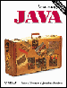

Credit and Acknowledgments
Many people have contributed substantially to BeanShell over the years.
I will attempt to start crediting those individual here. Please do not be
offended if your name is missing. This list will grow as I have time to
work backwards through my email and recover names.
- Thanks to Daniel Leuck for his long time support and many contributions
to the project.
Me
Finally, I will put in a plug for myself:
Pat Niemeyer (pat@pat.net)

If you like BeanShell check out my book:
Learning Java, O'Reilly & Associates, 2nd edition.
Winner of the Best Java Introductory Book - JavaOne 2001. Learning Java
(previously titled Exploring Java) is available in nine languages world-wide.
It is a comprehensive overview of the Java language and APIs including
a brief introduction to BeanShell as well!
You may freely use and reproduce this document in its entirety as long as
you preserve this license information and a pointer to the original
web site: http://www.beanshell.org. You may integrate parts of this document
into your own documentation as long as you provide this same information
at an appropriate place in your document.
This document is copyright Pat Niemeyer, 2002. Sections contributed by
other authors are copyrighted to those individuals and subject to the
terms of use described above.